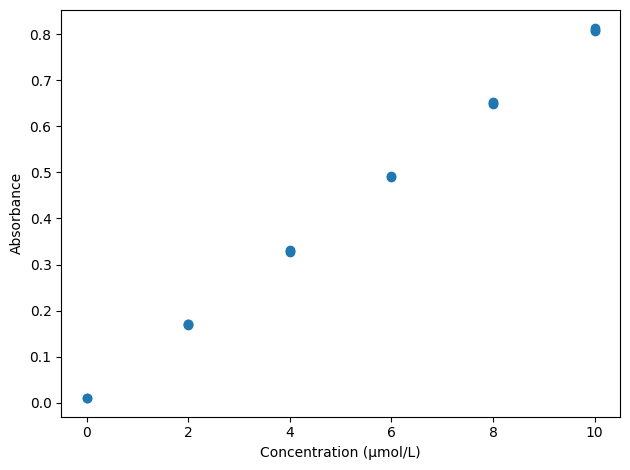

Reading and cleaning chemical data#
Learning outcomes
After working through this topic, you should be able to:
explain how data are organised in a CSV file
read data files with Pandas
inspect columns, data types and missing values
filter, sort and group chemical data
create new columns without overwriting the raw measurements
document and justify decisions made during data cleaning
Data are everywhere, but data are not automatically knowledge. Before drawing a chemical conclusion, we need to know what the measurements represent, which units were used, and whether the dataset contains missing, duplicated or invalid values.
In this chapter we follow a small UV–Vis experiment. The dataset contains blanks, calibration standards and replicate measurements of an unknown sample. In the next chapters we will use the standards to build a calibration model and estimate the unknown concentration. First we need to read and inspect the raw data.
Data files#
We often store and exchange measurements as plain text because the format is robust and can be read by many programs. Word documents are not plain-text data files because they also contain information about fonts, colours and formatting. .txt and .csv are common plain-text formats.
Data file
A data file stores observations in a consistent structure so that they can be read and processed by a program. In a tabular data file, each row is usually one observation and the columns describe variables.
CSV stands for comma-separated values. Each line normally represents one observation, with values separated by commas:
sample_id,sample_type,concentration_uM,replicate,absorbance
blank_1,blank,0,1,0.010
blank_2,blank,0,2,0.011
std_2_1,standard,2,1,0.171
std_2_2,standard,2,2,0.169
The first row contains column names. The following rows each describe one measurement. This is often called a tidy or long data layout: one observation per row, one variable per column, and one value per cell.
Units in data
Units should be explicit, but the measurements themselves should normally remain numeric. Here the unit is encoded in the column name concentration_uM. An alternative is to keep units in metadata. A value such as "2 µmol/L" becomes text and is more difficult to calculate with.
Reading data with Pandas#
Pandas is widely used for tabular data. read_csv reads a CSV file into a DataFrame.
DataFrame
A DataFrame is a two-dimensional data structure with named columns and indexed rows. It resembles a table, but its columns can be selected, calculated with and transformed directly in Python.
import pandas as pd
raw_data = pd.read_csv("data/uvvis_raw.csv")
raw_data
| sample_id | sample_type | concentration_uM | replicate | absorbance | |
|---|---|---|---|---|---|
| 0 | blank_1 | blank | 0.0 | 1 | 0.010 |
| 1 | blank_2 | blank | 0.0 | 2 | 0.011 |
| 2 | std_2_1 | standard | 2.0 | 1 | 0.171 |
| 3 | std_2_2 | standard | 2.0 | 2 | 0.169 |
| 4 | std_2_3 | standard | 2.0 | 3 | 0.172 |
| 5 | std_4_1 | standard | 4.0 | 1 | 0.329 |
| 6 | std_4_2 | standard | 4.0 | 2 | 0.331 |
| 7 | std_4_3 | standard | 4.0 | 3 | 0.328 |
| 8 | std_6_1 | standard | 6.0 | 1 | 0.489 |
| 9 | std_6_2 | standard | 6.0 | 2 | 0.491 |
| 10 | std_6_3 | standard | 6.0 | 3 | NaN |
| 11 | std_8_1 | standard | 8.0 | 1 | 0.648 |
| 12 | std_8_2 | standard | 8.0 | 2 | 0.652 |
| 13 | std_8_3 | standard | 8.0 | 3 | 0.650 |
| 14 | std_10_1 | standard | 10.0 | 1 | 0.807 |
| 15 | std_10_2 | standard | 10.0 | 2 | 0.812 |
| 16 | std_10_3 | standard | 10.0 | 3 | 0.809 |
| 17 | unknown_1 | unknown | NaN | 1 | 0.603 |
| 18 | unknown_2 | unknown | NaN | 2 | 0.606 |
| 19 | unknown_3 | unknown | NaN | 3 | 0.604 |
The path data/uvvis_raw.csv means that the file is stored in a subfolder named data relative to this notebook. If the file is elsewhere, the path needs to be changed.
Notice that we omit the print statement in Jupyter Notebooks - the formatting will be nicer without it. Although, remember that only the last statement in a cell will be printed.
Some exported files use semicolons as separators and commas as decimal marks. We can describe that explicitly instead of editing the file by hand:
data = pd.read_csv("data/example_semicolon.csv", sep=";", decimal=",")
data
| sample_id | concentration_mg_L | |
|---|---|---|
| 0 | sample_1 | 1.25 |
| 1 | sample_2 | 1.31 |
| 2 | sample_3 | 1.28 |
Explicitly describing the file format makes the analysis more reproducible than manually replacing characters without recording what was changed.
Inspecting the dataset#
Before analysing a file, inspect what Python actually read.
import pandas as pd
raw_data = pd.read_csv("data/uvvis_raw.csv")
print(raw_data.head())
print(raw_data.tail())
print(raw_data.shape)
print(raw_data.columns)
print(raw_data.dtypes)
sample_id sample_type concentration_uM replicate absorbance
0 blank_1 blank 0.0 1 0.010
1 blank_2 blank 0.0 2 0.011
2 std_2_1 standard 2.0 1 0.171
3 std_2_2 standard 2.0 2 0.169
4 std_2_3 standard 2.0 3 0.172
sample_id sample_type concentration_uM replicate absorbance
15 std_10_2 standard 10.0 2 0.812
16 std_10_3 standard 10.0 3 0.809
17 unknown_1 unknown NaN 1 0.603
18 unknown_2 unknown NaN 2 0.606
19 unknown_3 unknown NaN 3 0.604
(20, 5)
Index(['sample_id', 'sample_type', 'concentration_uM', 'replicate',
'absorbance'],
dtype='str')
sample_id str
sample_type str
concentration_uM float64
replicate int64
absorbance float64
dtype: object
head()shows the first five rows.tail()shows the last five.shapegives the number of rows and columns.columnslists the column names.dtypesshows the data type Pandas assigned to each column.
info() combines much of this information:
raw_data.info()
<class 'pandas.DataFrame'>
RangeIndex: 20 entries, 0 to 19
Data columns (total 5 columns):
# Column Non-Null Count Dtype
--- ------ -------------- -----
0 sample_id 20 non-null str
1 sample_type 20 non-null str
2 concentration_uM 17 non-null float64
3 replicate 20 non-null int64
4 absorbance 19 non-null float64
dtypes: float64(2), int64(1), str(2)
memory usage: 932.0 bytes
Text columns are commonly stored as object or string, integers as int64, and decimal numbers as float64. A column that should be numeric but appears as object may contain text, an unexpected decimal separator or other symbols that cannot be interpreted as numbers.
You can inspect a small UV–Vis dataset in the browser below. The data are included directly in the program so that the example works without uploading a file.
Check your understanding
How many rows and columns are present?
Which columns contain text and which contain numbers?
Why are the concentration values missing for the unknown sample?
Where is the other missing value?
Suggested answer
The concentration is missing for the unknown sample because that is the quantity we intend to determine later; this is not necessarily an error. The missing absorbance for one calibration replicate, however, represents a failed or absent measurement and should be investigated before analysis.
Preserve the raw data#
Raw measurements should normally not be overwritten. If values are changed directly in raw_data, it becomes harder to reconstruct what the instrument actually recorded. Make a working copy instead:
clean_data = raw_data.copy()
A simple workflow is therefore:
raw_datacontains data exactly as read from the file.clean_datacontains documented processing steps.Analysis is performed on the processed copy.
In a larger project the original raw-data file should also be protected from accidental editing or kept separately. The code then becomes a traceable description of how the raw data were transformed.
Missing values#
Pandas often represents a missing numeric value as NaN (not a number). Count missing values column by column with:
raw_data.isna().sum()
sample_id 0
sample_type 0
concentration_uM 3
replicate 0
absorbance 1
dtype: int64
To inspect the row with a missing absorbance:
missing_absorbance = raw_data[raw_data["absorbance"].isna()]
missing_absorbance
| sample_id | sample_type | concentration_uM | replicate | absorbance | |
|---|---|---|---|---|---|
| 10 | std_6_3 | standard | 6.0 | 3 | NaN |
There is no universally correct automatic response to a missing value. Depending on the experiment, we might:
inspect the instrument file or laboratory notes
repeat the measurement
retain the row and mark the value as missing
omit the row from one particular analysis
estimate the value only when there is a defensible scientific and statistical reason
In this teaching dataset, the instrument log states that measurement std_6_3 failed because the cuvette was incorrectly positioned. We therefore omit that row from analyses that require an absorbance value:
clean_data = raw_data.copy()
clean_data = clean_data.dropna(subset=["absorbance"])
Using subset is important. dropna() without arguments would also remove the unknown samples because their concentrations are intentionally missing.
Important
A missing value is not the same as a measured value of zero. Zero may be a valid experimental result. NaN means the value is unavailable.
Duplicates#
A row may accidentally have been stored twice. We can check for exact duplicates with:
duplicates = raw_data.duplicated()
raw_data[duplicates]
| sample_id | sample_type | concentration_uM | replicate | absorbance |
|---|
An identical row is not automatically an error. Two genuine replicate measurements can sometimes have exactly the same numerical result. Removing a duplicate should therefore be based on how the data were generated, not only on identical values.
If an accidental duplicated export row has been documented, we can remove it with drop_duplicates().
clean_data = clean_data.drop_duplicates()
Filtering data#
Logical conditions select rows. Here we extract only the calibration standards:
standards = clean_data[clean_data["sample_type"] == "standard"]
standards
| sample_id | sample_type | concentration_uM | replicate | absorbance | |
|---|---|---|---|---|---|
| 2 | std_2_1 | standard | 2.0 | 1 | 0.171 |
| 3 | std_2_2 | standard | 2.0 | 2 | 0.169 |
| 4 | std_2_3 | standard | 2.0 | 3 | 0.172 |
| 5 | std_4_1 | standard | 4.0 | 1 | 0.329 |
| 6 | std_4_2 | standard | 4.0 | 2 | 0.331 |
| 7 | std_4_3 | standard | 4.0 | 3 | 0.328 |
| 8 | std_6_1 | standard | 6.0 | 1 | 0.489 |
| 9 | std_6_2 | standard | 6.0 | 2 | 0.491 |
| 10 | std_6_3 | standard | 6.0 | 3 | NaN |
| 11 | std_8_1 | standard | 8.0 | 1 | 0.648 |
| 12 | std_8_2 | standard | 8.0 | 2 | 0.652 |
| 13 | std_8_3 | standard | 8.0 | 3 | 0.650 |
| 14 | std_10_1 | standard | 10.0 | 1 | 0.807 |
| 15 | std_10_2 | standard | 10.0 | 2 | 0.812 |
| 16 | std_10_3 | standard | 10.0 | 3 | 0.809 |
Several conditions can be combined. Parentheses around each condition are important when using Pandas with & and |.
mid_range = clean_data[
(clean_data["sample_type"] == "standard")
& (clean_data["concentration_uM"] >= 4)
& (clean_data["concentration_uM"] <= 8)
]
mid_range
| sample_id | sample_type | concentration_uM | replicate | absorbance | |
|---|---|---|---|---|---|
| 5 | std_4_1 | standard | 4.0 | 1 | 0.329 |
| 6 | std_4_2 | standard | 4.0 | 2 | 0.331 |
| 7 | std_4_3 | standard | 4.0 | 3 | 0.328 |
| 8 | std_6_1 | standard | 6.0 | 1 | 0.489 |
| 9 | std_6_2 | standard | 6.0 | 2 | 0.491 |
| 10 | std_6_3 | standard | 6.0 | 3 | NaN |
| 11 | std_8_1 | standard | 8.0 | 1 | 0.648 |
| 12 | std_8_2 | standard | 8.0 | 2 | 0.652 |
| 13 | std_8_3 | standard | 8.0 | 3 | 0.650 |
Filtering is not the same as deleting. We are creating a view or a new DataFrame for a particular scientific question while the full raw dataset remains available.
Sorting data#
Rows can be sorted by one or more columns:
sorted_standards = standards.sort_values(["concentration_uM", "replicate"])
sorted_standards
| sample_id | sample_type | concentration_uM | replicate | absorbance | |
|---|---|---|---|---|---|
| 2 | std_2_1 | standard | 2.0 | 1 | 0.171 |
| 3 | std_2_2 | standard | 2.0 | 2 | 0.169 |
| 4 | std_2_3 | standard | 2.0 | 3 | 0.172 |
| 5 | std_4_1 | standard | 4.0 | 1 | 0.329 |
| 6 | std_4_2 | standard | 4.0 | 2 | 0.331 |
| 7 | std_4_3 | standard | 4.0 | 3 | 0.328 |
| 8 | std_6_1 | standard | 6.0 | 1 | 0.489 |
| 9 | std_6_2 | standard | 6.0 | 2 | 0.491 |
| 10 | std_6_3 | standard | 6.0 | 3 | NaN |
| 11 | std_8_1 | standard | 8.0 | 1 | 0.648 |
| 12 | std_8_2 | standard | 8.0 | 2 | 0.652 |
| 13 | std_8_3 | standard | 8.0 | 3 | 0.650 |
| 14 | std_10_1 | standard | 10.0 | 1 | 0.807 |
| 15 | std_10_2 | standard | 10.0 | 2 | 0.812 |
| 16 | std_10_3 | standard | 10.0 | 3 | 0.809 |
Sorting does not change the chemical meaning of the observations, but it can make unexpected values easier to notice and makes it easier to verify that replicates are associated with the correct concentration.
Grouping and summarising data#
The calibration standards were measured in replicates. We can group by concentration and calculate the number of measurements, mean and sample standard deviation.
summary = (
standards
.groupby("concentration_uM")["absorbance"]
.agg(["count", "mean", "std"])
)
summary
| count | mean | std | |
|---|---|---|---|
| concentration_uM | |||
| 2.0 | 3 | 0.170667 | 0.001528 |
| 4.0 | 3 | 0.329333 | 0.001528 |
| 6.0 | 2 | 0.490000 | 0.001414 |
| 8.0 | 3 | 0.650000 | 0.002000 |
| 10.0 | 3 | 0.809333 | 0.002517 |
Grouping is powerful because one operation is applied consistently to every concentration. But a summary table is not a replacement for the raw measurements: a mean and standard deviation can hide unusual replicates or missing data.
You can clean and group a small embedded dataset in the editor below.
Creating new columns#
Some processing steps produce new quantities that should be stored without erasing the original measurements. For example, we can correct absorbance for the mean blank signal.
blank_mean = clean_data.loc[clean_data["sample_type"] == "blank", "absorbance"].mean()
clean_data["blank_corrected_absorbance"] = clean_data["absorbance"] - blank_mean
clean_data.head()
| sample_id | sample_type | concentration_uM | replicate | absorbance | blank_corrected_absorbance | |
|---|---|---|---|---|---|---|
| 0 | blank_1 | blank | 0.0 | 1 | 0.010 | -0.0005 |
| 1 | blank_2 | blank | 0.0 | 2 | 0.011 | 0.0005 |
| 2 | std_2_1 | standard | 2.0 | 1 | 0.171 | 0.1605 |
| 3 | std_2_2 | standard | 2.0 | 2 | 0.169 | 0.1585 |
| 4 | std_2_3 | standard | 2.0 | 3 | 0.172 | 0.1615 |
Keeping both columns makes the transformation explicit: absorbance is the recorded value, whereas blank_corrected_absorbance is derived.
The same principle applies to unit conversions. If a dataset stores concentration in µmol/L but a later calculation needs mol/L, create a new column rather than silently replacing the original.
clean_data["concentration_M"] = clean_data["concentration_uM"] * 1e-6
Cleaning text categories#
Real datasets often contain inconsistent capitalisation or whitespace, such as Standard, standard and STANDARD. These can be normalised if they truly refer to the same category.
clean_data["sample_type"] = clean_data["sample_type"].str.strip().str.lower()
Always inspect the result after an automatic text-cleaning operation. Two labels that look similar may represent genuinely different sample types.
From DataFrame to figure#
Pandas columns can be passed directly to Matplotlib. Here we show every calibration replicate so that the variation remains visible.
import matplotlib.pyplot as plt
standards = clean_data[clean_data["sample_type"].isin(["blank", "standard"])]
plt.scatter(standards["concentration_uM"], standards["absorbance"])
plt.xlabel("Concentration (µmol/L)")
plt.ylabel("Absorbance")
plt.tight_layout()
plt.show()

If we plotted only the group means, the figure would be tidier, but we would lose direct information about replicate-to-replicate variation. Whether to show raw observations, summaries or both depends on the purpose of the figure.
A reproducible workflow#
The complete processing sequence can be written as ordinary code rather than manual spreadsheet edits.
import pandas as pd
# 1. Read and preserve raw data
raw_data = pd.read_csv("data/uvvis_raw.csv")
# 2. Inspect
print(raw_data.info())
print(raw_data.isna().sum())
# 3. Make a working copy
clean_data = raw_data.copy()
# 4. Apply a documented decision: remove failed absorbance measurement
clean_data = clean_data.dropna(subset=["absorbance"])
# 5. Add derived values rather than overwriting raw measurements
blank_mean = clean_data.loc[clean_data["sample_type"] == "blank", "absorbance"].mean()
clean_data["blank_corrected_absorbance"] = clean_data["absorbance"] - blank_mean
# 6. Save processed data without overwriting the raw file
clean_data.to_csv("data/uvvis_processed.csv", index=False)
<class 'pandas.DataFrame'>
RangeIndex: 20 entries, 0 to 19
Data columns (total 5 columns):
# Column Non-Null Count Dtype
--- ------ -------------- -----
0 sample_id 20 non-null str
1 sample_type 20 non-null str
2 concentration_uM 17 non-null float64
3 replicate 20 non-null int64
4 absorbance 19 non-null float64
dtypes: float64(2), int64(1), str(2)
memory usage: 932.0 bytes
None
sample_id 0
sample_type 0
concentration_uM 3
replicate 0
absorbance 1
dtype: int64
The code documents what was done. A complete scientific analysis must also explain why each decision was justified by the experimental context.
A useful principle
Data cleaning should make the dataset more faithful to the experiment, not merely make the later statistical result look nicer.
Exercises#
Exercise 2.1
Open data/uvvis_raw.csv as plain text. Identify the column names, delimiter, missing values and the columns in which units are encoded.
Exercise 2.2
Read data/uvvis_raw.csv with Pandas. Use head, shape, columns, dtypes and info to write a short description of the dataset.
Exercise 2.3
Count missing values. Explain why the missing concentrations for the unknown sample and the missing absorbance for std_6_3 have different scientific meanings.
Exercise 2.4
Create clean_data as a copy of the raw data. Remove only rows that lack absorbance. Verify that the unknown samples are still present.
Exercise 2.5
Filter the calibration standards and group them by concentration. Calculate count, mean and std for absorbance. Which concentration has fewer valid replicates than the others, and why?
Exercise 2.6
Calculate the mean blank absorbance and add a new column containing blank-corrected absorbance. Explain why it is preferable to keep the uncorrected measurements as a separate column.
Exercise 2.7
The file data/reaction_kinetics.csv contains time and absorbance. Read it, inspect the data types, sort by time and add a column relative_absorbance in which each absorbance is divided by the initial value. Plot the result.
Exercise 2.8 — cleaning decisions
Imagine that one calibration replicate is much higher than the other two but is not missing. List at least four things you should investigate before deciding whether to exclude it. Which of those questions require chemical or experimental information that Pandas cannot supply?